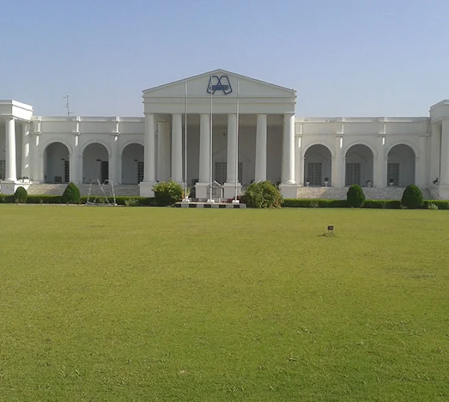

Mian Group of Industries
GT Road, Faisalabad

Quality Yarn. Reliable Manufacturing with customer satisfaction.
Welcome to Mian Textile Mills (Mian Group of Industries).
Mian Textile Mills is a textile manufacturing and spinning unit located on GT Road, Faisalabad
The company is part of the Mian Group and is engaged in the manufacturing of quality yarn for textile applications.
Established in 1976:
Production Capacity 24000 lbs daily:
Composition: 90% LCI Polyester 1.2d x 51 mm and 10% Viscose 1.2d x 51 mm
PV Yarn is produced for textile manufacturing applications where strength, durability and comfort are required.
High-quality ring spun yarn manufactured for various textile applications.
Specifications: Pv 90:10
Our manufacturing process includes the following stages:
Quality is an important part of our manufacturing process. We focus on maintaining consistent yarn quality and customer satisfaction.
Certifications: [Certification details to be added]
Quality Control: [Quality control details to be added]
Mian Textile Mills (Mian Group of industries)
GT Road, Faisalabad,
Punjab Pakistan
Phone: 0300-1234567
Email: info@Miantextile.example
Google Maps: View Mian Textile Mills on Google Maps